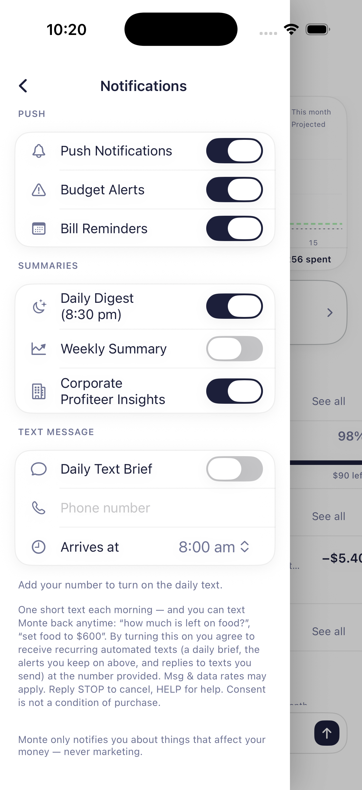

SMS Opt-In Process
How Monte collects consent for text messages
Monte's Daily Text Brief is an optional feature of the Monte iOS app, operated by Christian Wilson LLC. It is off by default. Consent is collected inside the app, from the user, on the following screen:
The opt-in flow
- The user opens Monte → Settings → Notifications → Text Message.
- The user types their own phone number into the phone field (never pre-filled).
- The user chooses a delivery time and turns on the "Daily Text Brief" toggle.
- Directly beneath the toggle, the screen states the program terms verbatim (see below).
Consent language shown at opt-in
“One short text each morning — and you can text Monte back anytime: “how much is left on food?”, “set food to $600”. By turning this on you agree to receive recurring automated texts (a daily brief, the alerts you keep on above, and replies to texts you send) at the number provided. Msg & data rates may apply. Reply STOP to cancel, HELP for help. Consent is not a condition of purchase.”
Opt-in screen

Opting out
Users can opt out at any time by replying STOP to any message or by turning the toggle off in the app. HELP returns help information. Message frequency: one daily brief plus any alerts the user leaves enabled and replies to user-initiated texts. Full terms: SMS Terms & Conditions · Privacy Policy.